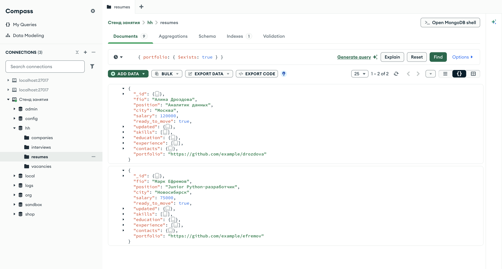
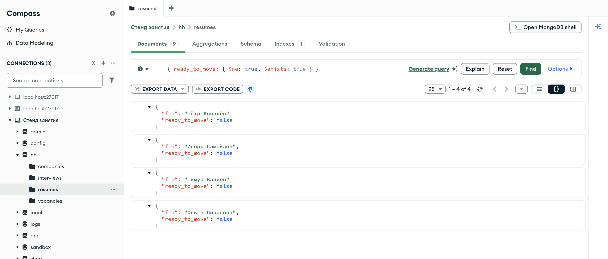
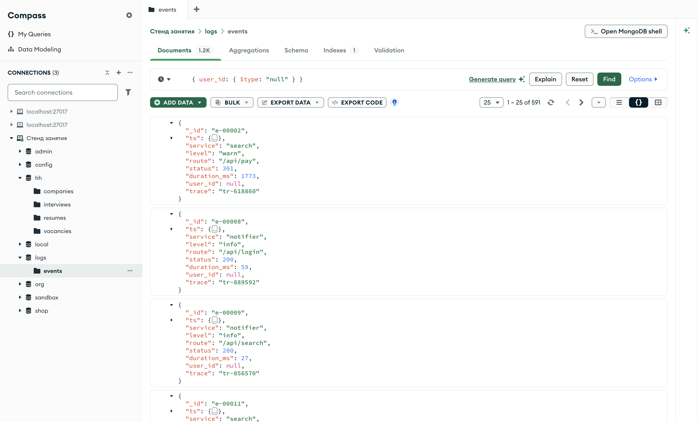
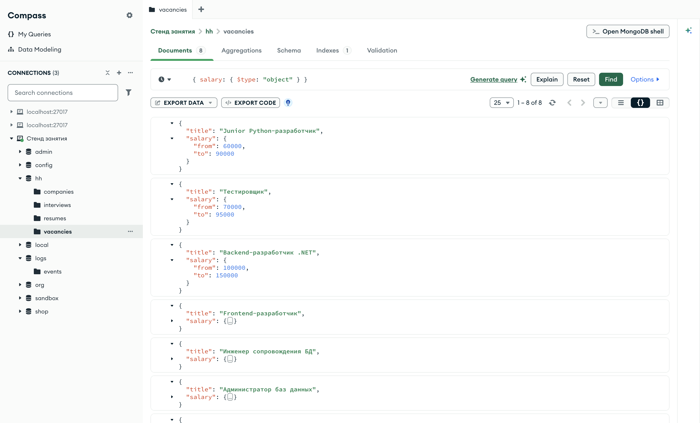
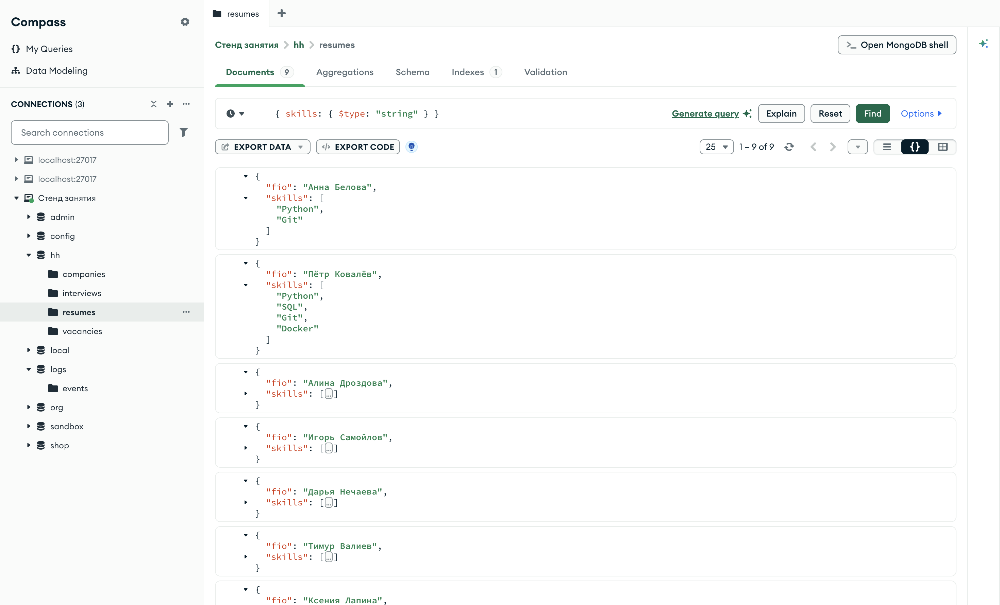
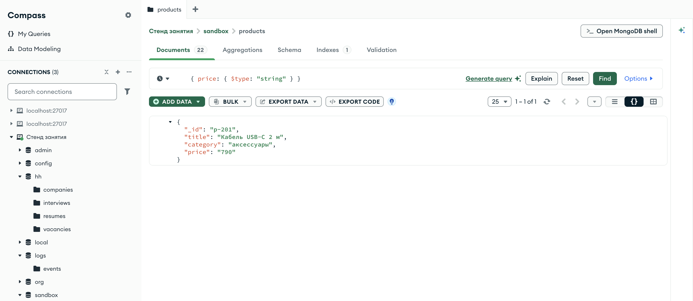
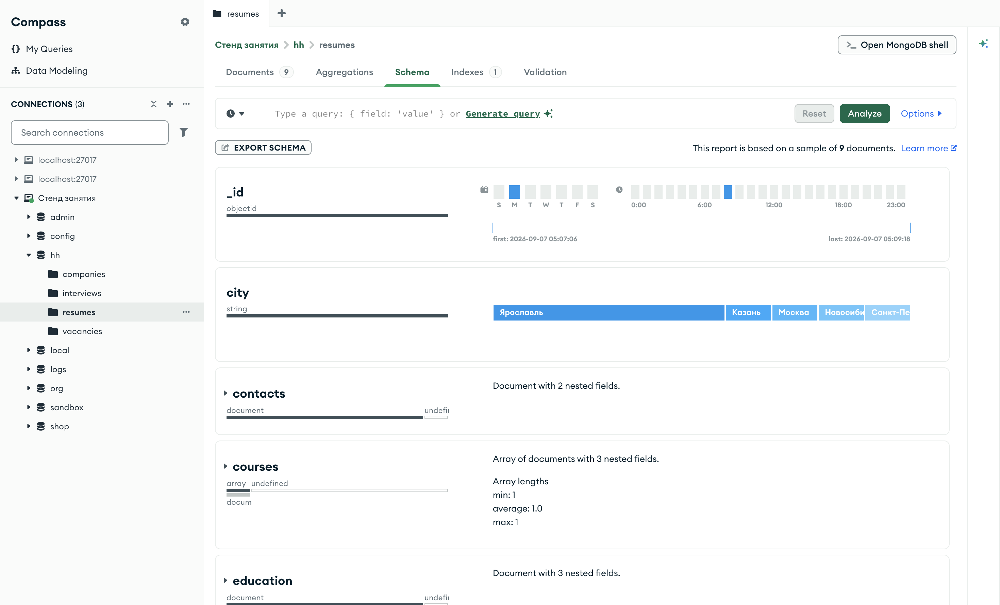

Справочник по MongoDB · модуль 2 · язык фильтров
2.5
Есть ли поле:
$exists и $type
Документы одной коллекции не обязаны быть одинаковыми: у одних поле есть, у других нет, в одном поле может лежать число, в другом документе под тем же именем — строка. Здесь разобраны два оператора, которые проверяют само поле: $exists — есть ли оно в документе, и $type — какого типа его значение. Отдельно — чем отсутствующее поле отличается от поля со значением null и как найти значения, записанные не тем типом.
- Категория
- Язык запросов
- Уровень
- Начальный
- Связанные темы
- Документ и BSON, операторы сравнения, отрицания
$neи$nin - Зачем это знать
- Находить неполные документы и значения, записанные не тем типом
Как запускать примеры этой главы
docker compose run --rm reset или скрипт из главы 1.0, §6.mongodb-glava-2.5-python.zip, 61 КБmongodb-glava-2.5-ruby.zip, 61 КБmongodb-glava-2.5-go.zip, 66 КБmongodb-glava-2.5-cpp.zip, 64 КБ — все примеры главы готовыми программами, учебные базы и стенд в Docker. В README.md — запуск в Docker, если Compass нет или он не подключается, и на установленном сервере с Compass, а также что должна напечатать каждая программа.lessons/ch2_5.py — пример вставляется в конец файлаlessons/ch2_5.rb — пример вставляется в конец файлаlessons/ch2_5.go — пример внутрь скобок в конце main, функции и типы — выше mainlessons/ch2_5.cpp — пример внутрь скобок в конце main, функции — выше maincd lessons, затем python ch2_5.pycd lessons, затем python3 ch2_5.py · в Docker: docker compose run --rm python lessons/ch2_5.pycd lessons, затем ruby ch2_5.rb · в Docker: docker compose run --rm ruby lessons/ch2_5.rbcd lessons, затем go run ch2_5.go · в Docker: docker compose run --rm go lessons/ch2_5.gocd lessons, затем g++ -std=c++17 ch2_5.cpp -o prog $(pkg-config --cflags --libs libmongocxx1) && ./prog · в Docker: docker compose run --rm cpp lessons/ch2_5.cpp§1$exists: есть ли поле
Оператор $exists принимает логическое значение. {"portfolio": {"$exists": true}} отбирает документы, в которых поле portfolio есть, с любым значением. {"portfolio": {"$exists": false}} — документы, в которых этого поля нет.
В коллекции резюме поля заполнены неодинаково. Ссылку на портфолио указали двое соискателей, пройденные курсы — одна соискательница, а готовность к переезду не отметил один человек из девяти.
print("есть portfolio: ", resumes.count_documents({"portfolio": {"$exists": True}})) print("есть courses: ", resumes.count_documents({"courses": {"$exists": True}})) print("есть ready_to_move:", resumes.count_documents({"ready_to_move": {"$exists": True}})) print("нет ready_to_move: ", resumes.count_documents({"ready_to_move": {"$exists": False}})) for doc in resumes.find({"portfolio": {"$exists": True}}, {"_id": 0, "fio": 1, "portfolio": 1}): print(doc)
std::cout << "есть portfolio: " << resumes.count_documents(make_document(kvp("portfolio", make_document(kvp("$exists", true))))) << std::endl; std::cout << "есть courses: " << resumes.count_documents(make_document(kvp("courses", make_document(kvp("$exists", true))))) << std::endl; std::cout << "есть ready_to_move: " << resumes.count_documents(make_document(kvp("ready_to_move", make_document(kvp("$exists", true))))) << std::endl; std::cout << "нет ready_to_move: " << resumes.count_documents(make_document(kvp("ready_to_move", make_document(kvp("$exists", false))))) << std::endl; mongocxx::options::find options; options.projection(make_document(kvp("_id", 0), kvp("fio", 1), kvp("portfolio", 1))); for (const auto& doc : resumes.find(make_document(kvp("portfolio", make_document(kvp("$exists", true)))), options)) { std::cout << bsoncxx::to_json(doc, bsoncxx::ExtendedJsonMode::k_relaxed) << std::endl; }
portfolio, _ := resumes.CountDocuments(ctx, bson.D{{Key: "portfolio", Value: bson.D{{Key: "$exists", Value: true}}}}) courses, _ := resumes.CountDocuments(ctx, bson.D{{Key: "courses", Value: bson.D{{Key: "$exists", Value: true}}}}) estReady, _ := resumes.CountDocuments(ctx, bson.D{{Key: "ready_to_move", Value: bson.D{{Key: "$exists", Value: true}}}}) netReady, _ := resumes.CountDocuments(ctx, bson.D{{Key: "ready_to_move", Value: bson.D{{Key: "$exists", Value: false}}}}) fmt.Println("есть portfolio: ", portfolio) fmt.Println("есть courses: ", courses) fmt.Println("есть ready_to_move:", estReady) fmt.Println("нет ready_to_move: ", netReady) cursor, _ := resumes.Find(ctx, bson.D{{Key: "portfolio", Value: bson.D{{Key: "$exists", Value: true}}}}, options.Find().SetProjection(bson.D{{Key: "_id", Value: 0}, {Key: "fio", Value: 1}, {Key: "portfolio", Value: 1}})) for cursor.Next(ctx) { var doc bson.D cursor.Decode(&doc) out, _ := bson.MarshalExtJSON(doc, false, false) fmt.Println(string(out)) }
puts "есть portfolio: " + resumes.count_documents({ "portfolio" => { "$exists" => true } }).to_s puts "есть courses: " + resumes.count_documents({ "courses" => { "$exists" => true } }).to_s puts "есть ready_to_move: " + resumes.count_documents({ "ready_to_move" => { "$exists" => true } }).to_s puts "нет ready_to_move: " + resumes.count_documents({ "ready_to_move" => { "$exists" => false } }).to_s resumes.find({ "portfolio" => { "$exists" => true } }, projection: { "_id" => 0, "fio" => 1, "portfolio" => 1 }) .each { |doc| puts doc.inspect }
есть portfolio: 2
есть courses: 1
есть ready_to_move: 8
нет ready_to_move: 1
{'fio': 'Алина Дроздова', 'portfolio': 'https://github.com/example/drozdova'}
{'fio': 'Марк Ефремов', 'portfolio': 'https://github.com/example/efremov'}
есть portfolio: 2
есть courses: 1
есть ready_to_move: 8
нет ready_to_move: 1
{ "fio" : "Алина Дроздова", "portfolio" : "https://github.com/example/drozdova" }
{ "fio" : "Марк Ефремов", "portfolio" : "https://github.com/example/efremov" }
есть portfolio: 2
есть courses: 1
есть ready_to_move: 8
нет ready_to_move: 1
{"fio":"Алина Дроздова","portfolio":"https://github.com/example/drozdova"}
{"fio":"Марк Ефремов","portfolio":"https://github.com/example/efremov"}
есть portfolio: 2
есть courses: 1
есть ready_to_move: 8
нет ready_to_move: 1
{"fio"=>"Алина Дроздова", "portfolio"=>"https://github.com/example/drozdova"}
{"fio"=>"Марк Ефремов", "portfolio"=>"https://github.com/example/efremov"}
Числа совпадают с тем, что было видно в предыдущих главах: поля ready_to_move нет в одном резюме — Анны Беловой. Для $exists значение поля не важно: документ с "portfolio": "" или "portfolio": null тоже попал бы в первую строку.

hh.resumes, фильтр { portfolio: { $exists: true } } — два резюме с портфолиоВ Compass $exists пишется в поле фильтра так же, как в коде. Счётчик 1 – 2 of 2 совпадает с первой строкой вывода выше; в обоих документах в кадре поле portfolio стоит последним.
§2$exists вместе с отрицанием
В главах 2.2–2.4 отрицания $ne, $nin, $not и $nor каждый раз возвращали и документы без проверяемого поля. $exists: true в том же документе условия убирает их: оба оператора стоят на одном поле и соединяются по «и».
print("ready_to_move $ne true: ", resumes.count_documents({"ready_to_move": {"$ne": True}})) print("то же и поле есть: ", resumes.count_documents({"ready_to_move": {"$ne": True, "$exists": True}})) print("уровень не СПО и поле есть:", resumes.count_documents({"education.level": {"$nin": ["СПО"], "$exists": True}}))
std::cout << "ready_to_move $ne true: " << resumes.count_documents(make_document(kvp("ready_to_move", make_document(kvp("$ne", true))))) << std::endl; std::cout << "то же и поле есть: " << resumes.count_documents(make_document(kvp("ready_to_move", make_document(kvp("$ne", true), kvp("$exists", true))))) << std::endl; std::cout << "уровень не СПО и поле есть: " << resumes.count_documents(make_document(kvp("education.level", make_document(kvp("$nin", make_array("СПО")), kvp("$exists", true))))) << std::endl;
neTrue, _ := resumes.CountDocuments(ctx, bson.D{{Key: "ready_to_move", Value: bson.D{{Key: "$ne", Value: true}}}}) neTrueEst, _ := resumes.CountDocuments(ctx, bson.D{{Key: "ready_to_move", Value: bson.D{{Key: "$ne", Value: true}, {Key: "$exists", Value: true}}}}) neSpoEst, _ := resumes.CountDocuments(ctx, bson.D{{Key: "education.level", Value: bson.D{{Key: "$nin", Value: bson.A{"СПО"}}, {Key: "$exists", Value: true}}}}) fmt.Println("ready_to_move $ne true: ", neTrue) fmt.Println("то же и поле есть: ", neTrueEst) fmt.Println("уровень не СПО и поле есть:", neSpoEst)
puts "ready_to_move $ne true: " + resumes.count_documents({ "ready_to_move" => { "$ne" => true } }).to_s puts "то же и поле есть: " + resumes.count_documents({ "ready_to_move" => { "$ne" => true, "$exists" => true } }).to_s puts "уровень не СПО и поле есть: " + resumes.count_documents({ "education.level" => { "$nin" => ["СПО"], "$exists" => true } }).to_s
ready_to_move $ne true: 5 то же и поле есть: 4 уровень не СПО и поле есть: 4
ready_to_move $ne true: 5 то же и поле есть: 4 уровень не СПО и поле есть: 4
ready_to_move $ne true: 5 то же и поле есть: 4 уровень не СПО и поле есть: 4
ready_to_move $ne true: 5 то же и поле есть: 4 уровень не СПО и поле есть: 4
Условие «не равно true» дало пять резюме, с требованием, чтобы поле было, — четыре. Те же четыре дало условие «уровень образования не СПО» с $exists: резюме без вложенного документа education в результат не попало. Точка в имени поля работает с $exists так же, как с другими операторами.

hh.resumes, фильтр { ready_to_move: { $ne: true, $exists: true } }Четыре документа, у всех ready_to_move: false. Резюме Анны Беловой, которое в главе 2.2 стояло первым в выдаче $ne, здесь отсутствует: $exists: true его отсёк.
§3null и отсутствующее поле
У документа без поля и у документа, где поле равно null, значения нет в обоих случаях, но для сервера это разные документы. В первом поля нет совсем, во втором оно есть и хранит значение типа null. Равенство с null (глава 2.3 §6) эти случаи не различает, $exists и $type — различают.
Пример берёт коллекцию events из базы logs — журнал запросов к сервису из главы 1.6. В каждом событии есть поле user_id: у части событий в нём строка с идентификатором пользователя, у остальных — null. Коллекция открывается первой строкой примера.
events = client["logs"]["events"] print("events: user_id null: ", events.count_documents({"user_id": None})) print("events: user_id нет: ", events.count_documents({"user_id": {"$exists": False}})) print("events: user_id $type null: ", events.count_documents({"user_id": {"$type": "null"}})) print("resumes: ready_to_move null: ", resumes.count_documents({"ready_to_move": None})) print("resumes: ready_to_move $type null:", resumes.count_documents({"ready_to_move": {"$type": "null"}}))
auto events = client["logs"]["events"]; std::cout << "events: user_id null: " << events.count_documents(make_document(kvp("user_id", bsoncxx::types::b_null{}))) << std::endl; std::cout << "events: user_id нет: " << events.count_documents(make_document(kvp("user_id", make_document(kvp("$exists", false))))) << std::endl; std::cout << "events: user_id $type null: " << events.count_documents(make_document(kvp("user_id", make_document(kvp("$type", "null"))))) << std::endl; std::cout << "resumes: ready_to_move null: " << resumes.count_documents(make_document(kvp("ready_to_move", bsoncxx::types::b_null{}))) << std::endl; std::cout << "resumes: ready_to_move $type null: " << resumes.count_documents(make_document(kvp("ready_to_move", make_document(kvp("$type", "null"))))) << std::endl;
events := client.Database("logs").Collection("events") ravnoNull, _ := events.CountDocuments(ctx, bson.D{{Key: "user_id", Value: nil}}) netPolya, _ := events.CountDocuments(ctx, bson.D{{Key: "user_id", Value: bson.D{{Key: "$exists", Value: false}}}}) tipNull, _ := events.CountDocuments(ctx, bson.D{{Key: "user_id", Value: bson.D{{Key: "$type", Value: "null"}}}}) readyNull, _ := resumes.CountDocuments(ctx, bson.D{{Key: "ready_to_move", Value: nil}}) readyTipNull, _ := resumes.CountDocuments(ctx, bson.D{{Key: "ready_to_move", Value: bson.D{{Key: "$type", Value: "null"}}}}) fmt.Println("events: user_id null: ", ravnoNull) fmt.Println("events: user_id нет: ", netPolya) fmt.Println("events: user_id $type null: ", tipNull) fmt.Println("resumes: ready_to_move null: ", readyNull) fmt.Println("resumes: ready_to_move $type null:", readyTipNull)
events = client.use("logs").database[:events] puts "events: user_id null: " + events.count_documents({ "user_id" => nil }).to_s puts "events: user_id нет: " + events.count_documents({ "user_id" => { "$exists" => false } }).to_s puts "events: user_id $type null: " + events.count_documents({ "user_id" => { "$type" => "null" } }).to_s puts "resumes: ready_to_move null: " + resumes.count_documents({ "ready_to_move" => nil }).to_s puts "resumes: ready_to_move $type null: " + resumes.count_documents({ "ready_to_move" => { "$type" => "null" } }).to_s
events: user_id null: 591 events: user_id нет: 0 events: user_id $type null: 591 resumes: ready_to_move null: 1 resumes: ready_to_move $type null: 0
events: user_id null: 591 events: user_id нет: 0 events: user_id $type null: 591 resumes: ready_to_move null: 1 resumes: ready_to_move $type null: 0
events: user_id null: 591 events: user_id нет: 0 events: user_id $type null: 591 resumes: ready_to_move null: 1 resumes: ready_to_move $type null: 0
events: user_id null: 591 events: user_id нет: 0 events: user_id $type null: 591 resumes: ready_to_move null: 1 resumes: ready_to_move $type null: 0
В журнале 591 событие с user_id, равным null, и ни одного события без этого поля. Поэтому равенство с null и $type: "null" дали одно и то же число. В резюме всё наоборот: поля ready_to_move нет в одном документе, а значения null нет ни в одном. Равенство с null нашло этот документ, $type: "null" — не нашло.

logs.events, фильтр { user_id: { $type: "null" } } — 591 событие из 1200Вкладка Documents подписана 1.2K — так Compass сокращает 1200. Счётчик 1 – 25 of 591: на первой странице 25 документов из 591. В каждом видно поле user_id со значением null — поле есть, и в нём записано null.
Отсюда правило: {"поле": null} — «значения нет, по любой причине»; {"поле": {"$type": "null"}} — «поле есть и записано как null»; {"поле": {"$exists": false}} — «поля нет».
§4$type: тип значения
Оператор $type отбирает документы, у которых значение поля имеет заданный тип BSON. Тип задаётся именем. Основные имена собраны в таблице; полный список — в документации MongoDB.
| Имя | Тип BSON | Поле в учебных базах |
|---|---|---|
"string" | строка | resumes.city |
"int", "long", "double" | целое 32 бита, целое 64 бита, дробное | resumes.salary — int |
"number" | любое из числовых | resumes.salary |
"bool" | логическое | resumes.ready_to_move |
"date" | дата | resumes.updated |
"object" | вложенный документ | vacancies.salary |
"array" | массив | resumes.skills |
"objectId" | ObjectId | resumes._id |
"null" | null | events.user_id |
В главе 2.1 было показано, что одно имя поля может хранить значения разных типов в разных документах. В учебной базе так устроено поле salary: в резюме это число, в вакансиях — вложенный документ с вилкой.
print("resumes: salary число: ", resumes.count_documents({"salary": {"$type": "number"}})) print("resumes: salary документ: ", resumes.count_documents({"salary": {"$type": "object"}})) print("vacancies: salary документ:", vacancies.count_documents({"salary": {"$type": "object"}})) print("vacancies: salary число: ", vacancies.count_documents({"salary": {"$type": "number"}}))
std::cout << "resumes: salary число: " << resumes.count_documents(make_document(kvp("salary", make_document(kvp("$type", "number"))))) << std::endl; std::cout << "resumes: salary документ: " << resumes.count_documents(make_document(kvp("salary", make_document(kvp("$type", "object"))))) << std::endl; std::cout << "vacancies: salary документ: " << vacancies.count_documents(make_document(kvp("salary", make_document(kvp("$type", "object"))))) << std::endl; std::cout << "vacancies: salary число: " << vacancies.count_documents(make_document(kvp("salary", make_document(kvp("$type", "number"))))) << std::endl;
rChislo, _ := resumes.CountDocuments(ctx, bson.D{{Key: "salary", Value: bson.D{{Key: "$type", Value: "number"}}}}) rDokument, _ := resumes.CountDocuments(ctx, bson.D{{Key: "salary", Value: bson.D{{Key: "$type", Value: "object"}}}}) vDokument, _ := vacancies.CountDocuments(ctx, bson.D{{Key: "salary", Value: bson.D{{Key: "$type", Value: "object"}}}}) vChislo, _ := vacancies.CountDocuments(ctx, bson.D{{Key: "salary", Value: bson.D{{Key: "$type", Value: "number"}}}}) fmt.Println("resumes: salary число: ", rChislo) fmt.Println("resumes: salary документ: ", rDokument) fmt.Println("vacancies: salary документ:", vDokument) fmt.Println("vacancies: salary число: ", vChislo)
puts "resumes: salary число: " + resumes.count_documents({ "salary" => { "$type" => "number" } }).to_s puts "resumes: salary документ: " + resumes.count_documents({ "salary" => { "$type" => "object" } }).to_s puts "vacancies: salary документ: " + vacancies.count_documents({ "salary" => { "$type" => "object" } }).to_s puts "vacancies: salary число: " + vacancies.count_documents({ "salary" => { "$type" => "number" } }).to_s
resumes: salary число: 9 resumes: salary документ: 0 vacancies: salary документ: 8 vacancies: salary число: 0
resumes: salary число: 9 resumes: salary документ: 0 vacancies: salary документ: 8 vacancies: salary число: 0
resumes: salary число: 9 resumes: salary документ: 0 vacancies: salary документ: 8 vacancies: salary число: 0
resumes: salary число: 9 resumes: salary документ: 0 vacancies: salary документ: 8 vacancies: salary число: 0
Все девять резюме хранят зарплату числом, все восемь вакансий — документом. Имя "number" используют, когда неважно, каким из числовых типов записано значение: драйверы по-разному выбирают между int, long и double, а "number" находит все три.

hh.vacancies, фильтр { salary: { $type: "object" } } — все восемь вакансийСчётчик 1 – 8 of 8. У первых трёх вакансий документ salary раскрыт: внутри поля from и to. Тот же фильтр на коллекции резюме вернул бы пустой результат — там salary число.
§5$type и поле-массив
С массивом $type проверяет и сам массив, и каждый его элемент. Документ подходит, если тип совпал хотя бы у одного из них.
print("experience массив:", resumes.count_documents({"experience": {"$type": "array"}})) print("skills массив: ", resumes.count_documents({"skills": {"$type": "array"}})) print("skills строка: ", resumes.count_documents({"skills": {"$type": "string"}})) print("skills не массив: ", resumes.count_documents({"skills": {"$not": {"$type": "array"}}}))
std::cout << "experience массив: " << resumes.count_documents(make_document(kvp("experience", make_document(kvp("$type", "array"))))) << std::endl; std::cout << "skills массив: " << resumes.count_documents(make_document(kvp("skills", make_document(kvp("$type", "array"))))) << std::endl; std::cout << "skills строка: " << resumes.count_documents(make_document(kvp("skills", make_document(kvp("$type", "string"))))) << std::endl; std::cout << "skills не массив: " << resumes.count_documents(make_document(kvp("skills", make_document(kvp("$not", make_document(kvp("$type", "array"))))))) << std::endl;
opyt, _ := resumes.CountDocuments(ctx, bson.D{{Key: "experience", Value: bson.D{{Key: "$type", Value: "array"}}}}) navykiMassiv, _ := resumes.CountDocuments(ctx, bson.D{{Key: "skills", Value: bson.D{{Key: "$type", Value: "array"}}}}) navykiStroka, _ := resumes.CountDocuments(ctx, bson.D{{Key: "skills", Value: bson.D{{Key: "$type", Value: "string"}}}}) navykiNeMassiv, _ := resumes.CountDocuments(ctx, bson.D{{Key: "skills", Value: bson.D{{Key: "$not", Value: bson.D{{Key: "$type", Value: "array"}}}}}}) fmt.Println("experience массив:", opyt) fmt.Println("skills массив: ", navykiMassiv) fmt.Println("skills строка: ", navykiStroka) fmt.Println("skills не массив: ", navykiNeMassiv)
puts "experience массив: " + resumes.count_documents({ "experience" => { "$type" => "array" } }).to_s puts "skills массив: " + resumes.count_documents({ "skills" => { "$type" => "array" } }).to_s puts "skills строка: " + resumes.count_documents({ "skills" => { "$type" => "string" } }).to_s puts "skills не массив: " + resumes.count_documents({ "skills" => { "$not" => { "$type" => "array" } } }).to_s
experience массив: 8 skills массив: 9 skills строка: 9 skills не массив: 0
experience массив: 8 skills массив: 9 skills строка: 9 skills не массив: 0
experience массив: 8 skills массив: 9 skills строка: 9 skills не массив: 0
experience массив: 8 skills массив: 9 skills строка: 9 skills не массив: 0
Условие $type: "array" на experience нашло восемь резюме: у Дарьи Нечаевой массив опыта пустой, но это массив. На поле skills и "array", и "string" нашли все девять резюме: сам массив подходит под первое условие, его элементы-строки — под второе. Чтобы отобрать документы, где в поле лежит одиночная строка вместо массива, условие записывают через отрицание: «поле не массив». Таких резюме в базе нет.

hh.resumes, фильтр { skills: { $type: "string" } } — все девять резюме, хотя skills — массивУ первых двух документов массив skills раскрыт: в квадратных скобках лежат строки. Сам массив не строка, но его элементы — строки, и этого хватило, чтобы подошли все девять резюме.
§6Значение не того типа
В главе 2.1 разобрано, откуда в базе берутся строки вместо чисел: веб-форма присылает все поля текстом. Пример моделирует такую запись в песочнице — добавляет товар, у которого цена записана строкой, — и ищет её двумя способами.
# товар из веб-формы: цена пришла текстом и так и записана box.insert_one({"_id": "p-201", "title": "Кабель USB-C 2 м", "category": "аксессуары", "price": "790"}) print("цена строкой: ", box.count_documents({"price": {"$type": "string"}})) print("цена больше 500:", box.count_documents({"price": {"$gt": 500}})) for doc in box.find({"price": {"$type": "string"}}, {"title": 1, "price": 1}): print(doc)
// товар из веб-формы: цена пришла текстом и так и записана box.insert_one(make_document( kvp("_id", "p-201"), kvp("title", "Кабель USB-C 2 м"), kvp("category", "аксессуары"), kvp("price", "790"))); std::cout << "цена строкой: " << box.count_documents(make_document(kvp("price", make_document(kvp("$type", "string"))))) << std::endl; std::cout << "цена больше 500: " << box.count_documents(make_document(kvp("price", make_document(kvp("$gt", 500))))) << std::endl; mongocxx::options::find options; options.projection(make_document(kvp("title", 1), kvp("price", 1))); for (const auto& doc : box.find(make_document(kvp("price", make_document(kvp("$type", "string")))), options)) { std::cout << bsoncxx::to_json(doc, bsoncxx::ExtendedJsonMode::k_relaxed) << std::endl; }
// товар из веб-формы: цена пришла текстом и так и записана box.InsertOne(ctx, bson.D{ {Key: "_id", Value: "p-201"}, {Key: "title", Value: "Кабель USB-C 2 м"}, {Key: "category", Value: "аксессуары"}, {Key: "price", Value: "790"}}) stroka, _ := box.CountDocuments(ctx, bson.D{{Key: "price", Value: bson.D{{Key: "$type", Value: "string"}}}}) dorozhe, _ := box.CountDocuments(ctx, bson.D{{Key: "price", Value: bson.D{{Key: "$gt", Value: 500}}}}) fmt.Println("цена строкой: ", stroka) fmt.Println("цена больше 500:", dorozhe) cursor, _ := box.Find(ctx, bson.D{{Key: "price", Value: bson.D{{Key: "$type", Value: "string"}}}}, options.Find().SetProjection(bson.D{{Key: "title", Value: 1}, {Key: "price", Value: 1}})) for cursor.Next(ctx) { var doc bson.D cursor.Decode(&doc) out, _ := bson.MarshalExtJSON(doc, false, false) fmt.Println(string(out)) }
# товар из веб-формы: цена пришла текстом и так и записана box.insert_one({ "_id" => "p-201", "title" => "Кабель USB-C 2 м", "category" => "аксессуары", "price" => "790" }) puts "цена строкой: " + box.count_documents({ "price" => { "$type" => "string" } }).to_s puts "цена больше 500: " + box.count_documents({ "price" => { "$gt" => 500 } }).to_s box.find({ "price" => { "$type" => "string" } }, projection: { "title" => 1, "price" => 1 }) .each { |doc| puts doc.inspect }
цена строкой: 1
цена больше 500: 21
{'_id': 'p-201', 'title': 'Кабель USB-C 2 м', 'price': '790'}
цена строкой: 1
цена больше 500: 21
{ "_id" : "p-201", "title" : "Кабель USB-C 2 м", "price" : "790" }
цена строкой: 1
цена больше 500: 21
{"_id":"p-201","title":"Кабель USB-C 2 м","price":"790"}
цена строкой: 1
цена больше 500: 21
{"_id"=>"p-201", "title"=>"Кабель USB-C 2 м", "price"=>"790"}
Условие $type: "string" нашло кабель, а условие «дороже 500» — нет, хотя 790 больше 500. Число в фильтре сравнивается только с числами (глава 2.2 §4), и документ со строкой в выборку по цене не попадает. Ошибки при этом нет, поэтому такие записи проверяют отдельным запросом по типу.

sandbox.products, фильтр { price: { $type: "string" } } — товар с ценой-строкойВкладка Documents подписана числом 22: к 21 товару песочницы добавился кабель. Счётчик 1 – 1 of 1. Значение "790" стоит в кавычках и выделено цветом строк — так Compass отличает строку от числа: число он печатает без кавычек, как salary в резюме.
Найденное значение исправляют обновлением из главы 1.7: цену записывают числом.
box.update_one({"_id": "p-201"}, {"$set": {"price": 790}}) print("цена строкой: ", box.count_documents({"price": {"$type": "string"}})) print("цена больше 500:", box.count_documents({"price": {"$gt": 500}}))
box.update_one(make_document(kvp("_id", "p-201")), make_document(kvp("$set", make_document(kvp("price", 790))))); std::cout << "цена строкой: " << box.count_documents(make_document(kvp("price", make_document(kvp("$type", "string"))))) << std::endl; std::cout << "цена больше 500: " << box.count_documents(make_document(kvp("price", make_document(kvp("$gt", 500))))) << std::endl;
box.UpdateOne(ctx, bson.D{{Key: "_id", Value: "p-201"}}, bson.D{{Key: "$set", Value: bson.D{{Key: "price", Value: 790}}}}) stroka, _ := box.CountDocuments(ctx, bson.D{{Key: "price", Value: bson.D{{Key: "$type", Value: "string"}}}}) dorozhe, _ := box.CountDocuments(ctx, bson.D{{Key: "price", Value: bson.D{{Key: "$gt", Value: 500}}}}) fmt.Println("цена строкой: ", stroka) fmt.Println("цена больше 500:", dorozhe)
box.update_one({ "_id" => "p-201" }, { "$set" => { "price" => 790 } }) puts "цена строкой: " + box.count_documents({ "price" => { "$type" => "string" } }).to_s puts "цена больше 500: " + box.count_documents({ "price" => { "$gt" => 500 } }).to_s
цена строкой: 0 цена больше 500: 22
цена строкой: 0 цена больше 500: 22
цена строкой: 0 цена больше 500: 22
цена строкой: 0 цена больше 500: 22
Строковых цен не осталось, и кабель попал в выборку по цене: товаров дороже 500 стало на один больше. Когда таких документов много, строку переводят в число одним запросом для всей коллекции — это делается конвейером агрегации в модуле 4.
§7Схема коллекции в Compass
Вкладка Schema в Compass собирает сведения о полях коллекции: какие поля встречаются, какого они типа и у какой доли документов есть. Анализ запускается кнопкой Analyze.

hh.resumes, вкладка Schema — сведения о полях по всем девяти документамНад списком написано This report is based on a sample of 9 documents: анализ прошёл по всем девяти резюме. Поля идут по алфавиту. Под именем каждого поля — полоса типов: её длина разделена между типами пропорционально числу документов. У contacts и education почти вся полоса занята типом document, а в конце остаётся короткий отрезок undefined — так Compass отмечает документы, где поля нет. У courses наоборот: тёмный отрезок array короткий, почти вся полоса — undefined. Справа Compass показывает распределение значений: для city — пять городов, для _id — дни и часы создания, взятые из ObjectId (глава 1.2).
§8Частые ошибки
| Что написано | Что происходит | Как правильно |
|---|---|---|
{"portfolio": {"$exists": "false"}} | Находит документы, где поле есть: непустая строка считается истиной | {"$exists": False} |
{"salary": {"$type": "integer"}} | Ошибка сервера: Unknown type name alias: integer | {"$type": "int"} |
$type: "int" на поле, где встречаются дробные числа | Документы с double и long не находятся | {"$type": "number"} |
{"skills": {"$type": "string"}} | Находит и массивы строк: условие проверяется на каждом элементе | {"$not": {"$type": "array"}} |
{"user_id": None} | Кроме null находит документы, где поля нет | {"$type": "null"} |
{"ready_to_move": {"$exists": False}} | Не находит документы, где поле есть и равно null | Равенство null — оно находит оба случая |
| Что написано | Что происходит | Как правильно |
|---|---|---|
make_document(kvp("portfolio", make_document(kvp("$exists", "false")))) | Находит документы, где поле есть: непустая строка считается истиной | make_document(kvp("$exists", false)) |
make_document(kvp("salary", make_document(kvp("$type", "integer")))) | Ошибка сервера: Unknown type name alias: integer | make_document(kvp("$type", "int")) |
$type: "int" на поле, где встречаются дробные числа | Документы с double и long не находятся | make_document(kvp("$type", "number")) |
make_document(kvp("skills", make_document(kvp("$type", "string")))) | Находит и массивы строк: условие проверяется на каждом элементе | make_document(kvp("$not", make_document(kvp("$type", "array")))) |
make_document(kvp("user_id", bsoncxx::types::b_null{})) | Кроме null находит документы, где поля нет | make_document(kvp("$type", "null")) |
make_document(kvp("ready_to_move", make_document(kvp("$exists", false)))) | Не находит документы, где поле есть и равно null | Равенство null — оно находит оба случая |
| Что написано | Что происходит | Как правильно |
|---|---|---|
bson.D{{Key: "portfolio", Value: bson.D{{Key: "$exists", Value: "false"}}}} | Находит документы, где поле есть: непустая строка считается истиной | bson.D{{Key: "$exists", Value: false}} |
bson.D{{Key: "salary", Value: bson.D{{Key: "$type", Value: "integer"}}}} | Ошибка сервера: Unknown type name alias: integer | bson.D{{Key: "$type", Value: "int"}} |
$type: "int" на поле, где встречаются дробные числа | Документы с double и long не находятся | bson.D{{Key: "$type", Value: "number"}} |
bson.D{{Key: "skills", Value: bson.D{{Key: "$type", Value: "string"}}}} | Находит и массивы строк: условие проверяется на каждом элементе | bson.D{{Key: "$not", Value: bson.D{{Key: "$type", Value: "array"}}}} |
bson.D{{Key: "user_id", Value: nil}} | Кроме null находит документы, где поля нет | bson.D{{Key: "$type", Value: "null"}} |
bson.D{{Key: "ready_to_move", Value: bson.D{{Key: "$exists", Value: false}}}} | Не находит документы, где поле есть и равно null | Равенство null — оно находит оба случая |
| Что написано | Что происходит | Как правильно |
|---|---|---|
{ "portfolio" => { "$exists" => "false" } } | Находит документы, где поле есть: непустая строка считается истиной | { "$exists" => false } |
{ "salary" => { "$type" => "integer" } } | Ошибка сервера: Unknown type name alias: integer | { "$type" => "int" } |
$type: "int" на поле, где встречаются дробные числа | Документы с double и long не находятся | { "$type" => "number" } |
{ "skills" => { "$type" => "string" } } | Находит и массивы строк: условие проверяется на каждом элементе | { "$not" => { "$type" => "array" } } |
{ "user_id" => nil } | Кроме null находит документы, где поля нет | { "$type" => "null" } |
{ "ready_to_move" => { "$exists" => false } } | Не находит документы, где поле есть и равно null | Равенство null — оно находит оба случая |
§9Проверьте себя
Чем {"ready_to_move": null} отличается от {"ready_to_move": {"$exists": false}}?
Равенство с null отбирает документы, где поля нет, и документы, где поле равно null. $exists: false отбирает только документы без поля. В резюме значения null нет, поэтому оба фильтра находят одно резюме; в журнале событий, где user_id бывает null, результаты различаются.
Как из {"ready_to_move": {"$ne": true}} убрать документы без поля?
Добавить в тот же документ условия $exists: true: {"ready_to_move": {"$ne": true, "$exists": true}}. Два оператора на одном поле соединяются по «и».
Почему {"skills": {"$type": "string"}} нашёл все резюме, хотя skills — массив?
С массивом $type проверяет и массив, и каждый элемент. Элементы skills — строки, поэтому документ подходит. Одиночную строку вместо массива находят условием {"skills": {"$not": {"$type": "array"}}}.
Почему товар с ценой "790" не нашёлся по условию {"price": {"$gt": 500}}?
Число в фильтре сравнивается только с числами, а в документе цена — строка. Такие записи находят по типу, {"price": {"$type": "string"}}, и исправляют обновлением.
Что покажет вкладка Schema для поля, которое есть у одного документа из девяти?
Полосу типов, где тип значения занимает короткий отрезок, а остальное — undefined, то есть документы без поля. Так на вкладке выглядит поле courses в резюме.
§10Шпаргалка
{"portfolio": {"$exists": True}}
{"portfolio": {"$exists": False}}
{"ready_to_move": {"$ne": True, "$exists": True}}
{"user_id": {"$type": "null"}}
{"salary": {"$type": "number"}}
{"price": {"$type": "string"}}
make_document(kvp("portfolio", make_document(kvp("$exists", true))))
make_document(kvp("portfolio", make_document(kvp("$exists", false))))
make_document(kvp("ready_to_move", make_document(kvp("$ne", true), kvp("$exists", true))))
make_document(kvp("user_id", make_document(kvp("$type", "null"))))
make_document(kvp("salary", make_document(kvp("$type", "number"))))
make_document(kvp("price", make_document(kvp("$type", "string"))))
bson.D{{Key: "portfolio", Value: bson.D{{Key: "$exists", Value: true}}}}
bson.D{{Key: "portfolio", Value: bson.D{{Key: "$exists", Value: false}}}}
bson.D{{Key: "ready_to_move", Value: bson.D{{Key: "$ne", Value: true}, {Key: "$exists", Value: true}}}}
bson.D{{Key: "user_id", Value: bson.D{{Key: "$type", Value: "null"}}}}
bson.D{{Key: "salary", Value: bson.D{{Key: "$type", Value: "number"}}}}
bson.D{{Key: "price", Value: bson.D{{Key: "$type", Value: "string"}}}}
{ "portfolio" => { "$exists" => true } }
{ "portfolio" => { "$exists" => false } }
{ "ready_to_move" => { "$ne" => true, "$exists" => true } }
{ "user_id" => { "$type" => "null" } }
{ "salary" => { "$type" => "number" } }
{ "price" => { "$type" => "string" } }
Итог главы
$exists проверяет, есть ли поле в документе, независимо от значения. Вместе с отрицанием в одном документе условия он убирает документы без поля. Равенство с null находит и поле со значением null, и отсутствующее поле; $type: "null" — только первое, $exists: false — только второе. $type проверяет тип значения по имени, "number" объединяет все числовые типы, а на массиве условие проверяется и для самого массива, и для каждого элемента. Значения не того типа не попадают в выборки по значению без ошибки, поэтому их ищут через $type. Следующая глава — об условиях на массивы: $all, $elemMatch и $size.